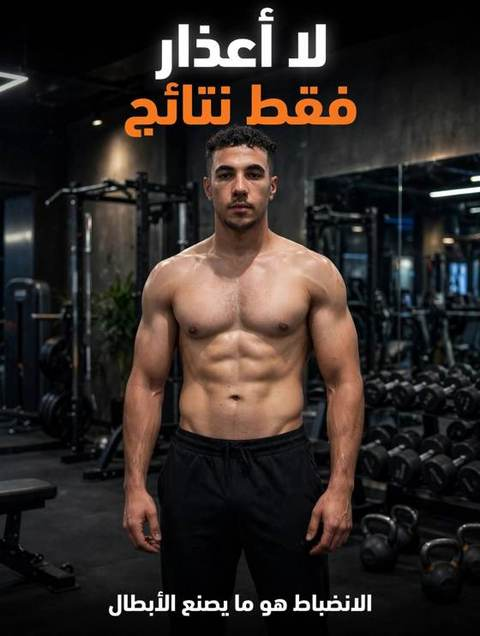
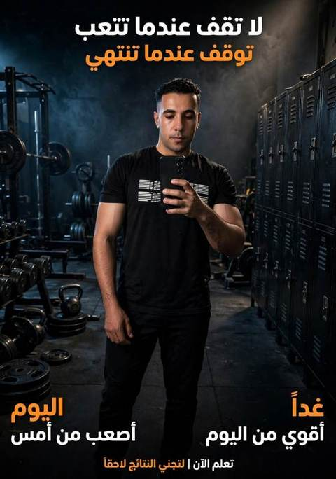

بتسجيل الدخول إنت موافق على سياسة الخصوصية وشروط الاستخدام.
احسب سعراتك، واتبع نظام غذائي على مقاسك ببدائل، وسجّل أكلك بصوتك أو بإيدك وتابع وزنك لحد ما توصل لهدفك.
مثال توضيحي

بإشراف Coach Moمدرب أونلاين بخبرة 8 سنينالأرقام تقديرية للتوعية فقط وليست نصيحة طبية. استشر دكتور أو أخصائي تغذية لو عندك حالة صحية.
Coach Mo
اضغط ＋ جنب أي صنف يتضاف لسجلك اليومي بسعراته وماكروزه (في التجربة وللمشتركين).
أرقام تقريبية للتوعية، والسعرات بتختلف حسب طريقة الطبخ والكمية. مش بديل لنصيحة دكتور أو أخصائي تغذية.
🆓 مجاني بالكامل بدخولك بجوجل، من غير اشتراك. اختار اللي يناسبك:
إعداد Coach Mo · نصايح عامة للتوعية ومش بديل عن الطبيب، ولازم إشراف طبيبك قبل أي تغيير في حالتك أو علاجك
آخر مراجعة: 17 أكتوبر 2026 · إعداد Coach Mo · محتوى توعوي عام
المحتوى توعوي ومش بديل للكشف. لو بعد الولادة اسأل دكتورك عن موعد بدء التمرين (عادة بعد 6 أسابيع للطبيعي وأكتر للقيصرية، والدكتور هو اللي يحدد). القياس بالأصابع تقريبي، والقياس الدقيق بالسونار أو عند أخصائي علاج طبيعي.
عضلة البطن المستقيمة (الستة مكعبات) نصين على جانبي البطن، بيربطهم شريط ضام في النص اسمه الخط الأبيض. الانفصال هو اتساع وارتخاء الخط ده وبعد النصين عن بعض. العضلة نفسها مش مقطوعة.
فتحة أقل من صباعين مع خط أبيض مشدود تعتبر في الحدود الطبيعية. من صباعين فأكتر يبقى فيه انفصال.
خط أبيض مشدود وبيقاوم صوابعك وهو فتحته 3 أصابع أحسن وظيفيًا من فتحة صباعين وهو طري وبيغطس. لو الشد ضعيف، تعامل مع حالتك كأنها درجة أعلى.
اعمل الاختبار نفسه كل أسبوعين في نفس الوقت (الصبح أحسن) وسجل العرض والشد والبروز.
فتحة من صباعين لحد أقل من 3 أصابع، وخط أبيض مشدود، ومفيش بروز واضح. غالبًا تتحسن بسرعة بالتمرين الصح.
فتحة من 3 لـ 4 أصابع، أو خط أبيض فيه ارتخاء، أو بروز لما تشد البطن. محتاجة صبر وتدرج، ويفضل تقييم أخصائي علاج طبيعي.
فتحة أكتر من 4 أصابع، أو بروز دائم أو فتق، أو خط أبيض طري تمامًا. ابدأ بالدكتور والأخصائي الأول قبل أي تمرين غير التنفس والحركات الخفيفة.
بتتحط في الحسبان لو الانفصال مستمر وبيعطل الحياة بعد تأهيل صح لمدة 6 لـ 12 شهر، أو لو فيه فتق. القرار للجراح.
المدة: أسبوعين للخفيفة، 4 لـ 6 أسابيع للمتوسطة، 8 أسابيع أو أكتر للشديدة (وبعد إذن الدكتور).
3 مرات أسبوعيًا. الخفيفة تبدأ من الأسبوع 3، والمتوسطة بعد 4 لـ 6 أسابيع بدون بروز.
انتقل للمرحلة اللي بعدها بس لو: مفيش بروز على شكل سلسة أو قبة في نص البطن أثناء التمرين، ومفيش وجع في الضهر أو الحوض أو تسريب، والشد في الخط الأبيض ثابت أو أحسن في الاختبار. لو ظهر البروز ارجع خطوة أو قلل الوزن أو المدى.
مش معنى كده إنها ممنوعة للأبد. بترجع تدريجيًا لما الخط الأبيض يتماسك ومفيش بروز.
المحتوى للتوعية العامة ولا يغني عن الفحص الطبي. الدرجات المذكورة تقسيم عملي لتحديد التدرج في التمرين وليست تصنيفًا طبيًا رسميًا موحدًا.
المحتوى ده توعوي عام ومش بديل للدكتور. الخشونة غير الروماتيزم، والتشخيص الصح بيحتاج كشف وساعات تحاليل وأشعة. التمارين والأكل بيساعدوا مع العلاج، مش بيلغوه.
العضلات القوية حوالين المفصل بتشيل عنه جزء من الحمل.
كل 1 كجم بتنزله بيخفف حوالي 4 كجم من الحمل على الركبة مع كل خطوة (حسب الدراسات). نزول الوزن من أقوى العوامل لتخفيف الألم. احسب سعراتك
الخلطات الشعبية والمستوردة اللي "بتشتغل بسرعة غريبة": كتير منها بيتحط فيها كورتيزون أو مسكنات من غير ما يتكتب، وده بيسبب مضاعفات (سكر، ضغط، هشاشة عظام، قرحة). ابعد عن أي خلطة مجهولة المصدر.
لو بتاخد مميعات دم، أو أدوية روماتيزم، أو سكر، أو ضغط: اسأل دكتورك قبل أي عشبة أو مكمل. ولو عندك روماتويد ماتوقفش دواءك من نفسك.
المحتوى ده توعوي عام ومش بديل للدكتور. لو عندك سكر أو ضغط أو أمراض كبد أو كلى، أو حامل أو بترضّعي: استشر دكتورك قبل أي تغيير كبير.
هي الدهون العميقة جوه البطن حوالين الكبد والأمعاء والبنكرياس، وده غير الدهون اللي تحت الجلد وبتمسكها بإيدك. وهي أخطر لأنها نشيطة هرمونيًا: مرتبطة بمقاومة الإنسولين والسكر والكبد الدهني والضغط وأمراض القلب.
الجلسات الخارجية (ليزر، كافيتيشن وموجات فوق صوتية، تبريد، تردد راديو، التكسير) بتشتغل على الدهون تحت الجلد القريبة من السطح. مش بتوصل للدهون العميقة جوه تجويف البطن.
حتى الشفط الجراحي بيشيل دهون تحت الجلد بس، ودراسة معروفة لقت إنه ماحسّنش حساسية الإنسولين ولا الضغط ولا الدهون في الدم.
ممكن شكل الجسم يتحسن والخطر الصحي الداخلي يفضل زي ما هو. لو بتعملها لسبب جمالي ده اختيارك، بس ماتعتبرهاش علاج للكرش الصحي.
الدهون الحشوية بتستجيب بسرعة نسبيًا للنزول في الوزن والحركة، وهي من أوائل الدهون اللي بتقل.
التمرين بيقلل الدهون الحشوية حتى لو الميزان ما اتحركش كتير. قيس محيط وسطك كل أسبوعين وسجّل الرقم.
مفيش عشبة بتسيّح الدهون الحشوية لوحدها. الأعشاب مساعد بسيط مع النظام والمشي، مش بديل.
لو عندك سكر أو ضغط أو قرحة أو حمل أو رضاعة أو بتاخد أدوية: اسأل دكتورك قبل أي عشبة. "طبيعي" مش معناها آمن بأي كمية.
أي دواء تخسيس لازم يتكتب بمعرفة دكتور بعد تقييم حالتك، مش من صديق ولا إعلان.
دواء مرخّص، بس آثاره الجانبية مش بسيطة: إسهال دهني وغازات وتسريب مع الأكل الدسم، وبيقلل امتصاص الفيتامينات الذايبة في الدهون (أ، د، هـ، ك). مش مناسب للكل ومينفعش تبدأه لوحدك.
الخطر الأكبر في الحبوب المستوردة أو اللي بتتباع على السوشيال: ممكن يكون فيها مواد غير معلنة (زي السيبوترامين اللي اتسحب من الأسواق لخطره على القلب) أو مدرات ومسهلات بتنزّل مية مش دهون وبتأذي القلب والكلى.
نظام + حركة + نوم، بشكل تدريجي. ولو عندك سمنة شديدة أو سكر فيه علاجات طبية معتمدة، بس تحت إشراف دكتور.
المحتوى ده توعوي عام ومش بديل للدكتور. ماتغيرش جرعة دواك ولا توقفه من نفسك، وأي أعراض جديدة أو شديدة روح بيها للدكتور.
الجسم بيفرز إنسولين كتير لكن الخلايا مش بتستجيب له كويس، فالسكر والدهون بيزيدوا مع الوقت. غالبًا مرتبطة بالكرش والدهون الحشوية وقلة الحركة والنوم.
سكر صايم، سكر تراكمي (HbA1c)، إنسولين صايم، دهون ثلاثية وكوليسترول. الدكتور هو اللي يفسّرها.
عطش شديد، تبول كتير، تعب، تشوش في الرؤية. لو القراءات عالية باستمرار أو معاها قيء وألم بطن وتنفس سريع: روح للطوارئ.
ضغط حوالي 180/120 أو أعلى مع صداع شديد أو ألم في الصدر أو ضيق نفس أو ضعف في جانب من الجسم أو تلعثم في الكلام: إسعاف فورًا.
المحتوى ده توعوي عام ومش بديل للدكتور والأشعة والفحص.
بيغطي أطراف العظام جوه المفاصل (زي الركبة والحوض). تآكله هو اللي بيسمى الخشونة.
أقوى وبيتحمل الضغط: وهو الغضروف الهلالي (المينيسكس) في الركبة، والأقراص اللي بين فقرات العمود الفقري، وهو المقصود بـ"غضروف الظهر".
مرن وبيرجع لشكله: في الودن والأنف والحنجرة. مش بيتأثر في مشاكل المفاصل الشائعة.
السكريات والأكل المصنع والمقليات، وركّز على نزول الوزن لأنه بيخفف الحمل على المفاصل والعمود الفقري.
المحتوى ده توعوي عام. الأنيميا بتتشخص بتحليل دم، وماتاخدش مكمل حديد من نفسك قبل التحليل.
صورة دم كاملة (CBC)، فيريتين (مخزون الحديد)، حديد، B12، فوليك. اعرف السبب قبل العلاج.
هبوط ضغط أو سكر، جفاف، قلة أكل أو نوم، القيام فجأة، توتر ونفس سريع.
دوخة مع إغماء، ألم صدر، ضعف في جانب، كلام مش واضح، صداع مفاجئ شديد أو ازدواج رؤية: إسعاف فورًا.
المحتوى ده توعوي عام ومش بديل للدكتور. لو الأعراض مستمرة أو شديدة اكشف.
وجبات كبيرة ودسمة، أكل حار، قهوة وغازيات، تدخين، النوم بعد الأكل مباشرة، توتر، زيادة وزن، وأحيانًا جرثومة المعدة.
صعوبة أو ألم في البلع، نزول وزن بدون سبب، قيء بدم، براز أسود، ألم شديد مستمر، أو الحموضة أكتر من أسبوعين رغم التغيير.
مضادات الحموضة بتقلل امتصاص أدوية تانية، فخد أي دوا تاني بعيد عنها ساعتين تقريبًا، واسأل الصيدلي.
هرمونات الحمل بترخي صمام المعدة، والرحم الكبير بيضغط على المعدة والأمعاء.
ألم أعلى البطن مع صداع شديد أو زغللة أو ورم مفاجئ في الوجه واليدين، أو قيء متواصل مش بتقدري تاكلي معاه.
المحتوى ده توعوي عام ومش بديل للدكتور. ماتاخدش منوّمات أو مكملات نوم من نفسك.
الأرق أكتر من 3 أسابيع، أو شخير عالي مع توقف نفس ونعاس شديد بالنهار (ممكن انقطاع نفس النوم)، أو اكتئاب أو قلق شديد.
المنوّمات ممكن تسبب اعتياد وتأثير في الصبح، فمتاخدش حاجة من غير دكتور، حتى الميلاتونين. والحامل والمرضع مايستخدموش أي مكمل أو عشبة للنوم من غير الدكتور.
المحتوى ده توعوي عام ومش بديل للدكتور. جرعة فيتامين د والكالسيوم بتتحدد بالتحليل وبمعرفة الدكتور.
نقص كثافة العظام فتبقى أضعف وتتكسر بسهولة، وغالبًا من غير أعراض لحد أول كسر.
أشعة قياس كثافة العظام (DEXA)، وتحليل فيتامين د (25-OH)، وأحيانًا كالسيوم. الدكتور بيحدد مين يحتاجها.
ألم مفاجئ في الضهر، نقص في الطول، أو كسر من وقعة بسيطة.
الملح الزيادة والمشروبات الغازية والكافيين الكتير والتدخين لأنهم بيزودوا فقد الكالسيوم.
شيل السجاجيد المنزلقة، وإضاءة كويسة، وحذاء ثابت، ومسكة في الحمام.
المحتوى ده توعوي عام ومش بديل لدكتور الجراحة وأخصائي التغذية. تعليمات فريقك الطبي بعد العملية هي الأساس، ومواعيد مراحل الأكل بتختلف من مريض للتاني.
غالبًا لمن مؤشر كتلة الجسم 40 فأكتر، أو 35 فأكتر مع أمراض مرتبطة بالسمنة زي السكر والضغط وانقطاع النفس، وحسب تقييم الدكتور بعد ما محاولات الدايت والحركة ماتنفعش.
العملية أداة مساعدة مش حل سحري. النتيجة على المدى الطويل بتعتمد على أكلك وحركتك ومتابعتك.
المضاعفات المتوقعة، ومدة الإقامة، ومتى ترجع للشغل، وجدول المتابعة، والمكملات المطلوبة.
ماتقفزش مرحلة. المعدة بتتحمل بالتدريج، والأكل المبكر قبل ميعاده ممكن يسبب قيء وألم أو مضاعفات.
العصاير والمشروبات الغازية والحلويات والمقليات والآيس كريم، والأكل الطري عالي السعرات اللي بيعدّي بسهولة، والكحول.
المحتوى ده توعوي عام ومش بديل للدكتور. الجلسات بتساعد في تحسين شكل الجسم مش في نزول وزن كبير، والأمان بيعتمد على الجهاز وعلى مين بيشغّله.
أغلبها بيقلل محيط منطقة معينة بشكل بسيط لمتوسط، ومش بينزّل وزنك الكلي بشكل واضح. النتيجة بتختلف من شخص لشخص وغالبًا بتحتاج أكتر من جلسة، والأحسن لمن وزنه قريب من المثالي.
احمرار وتورم وكدمات وألم موضعي ووخز، وبتروح غالبًا خلال أيام.
الأكل التقيل، والحمامات الساخنة جدًا والساونا لو الدكتور منع، وفرك المنطقة بقوة.
الدهون ممكن ترجع أو تتخزن في أماكن تانية لو السعرات زادت. الجلسات ماتغنيش عن الأكل الصح والحركة.
المحتوى ده توعوي عام ومش بديل للدكتور. أعراض القولون العصبي شبه أعراض أمراض تانية، والتشخيص بيحتاج كشف وأحيانًا تحاليل أو منظار.
اضطراب في حركة وحساسية الأمعاء، مش التهاب ولا ورم، ومش بيزوّد خطر السرطان. بيحصل من غير سبب عضوي واضح.
قلل الكافيين والحلويات الصناعية والمقليات والأكل الحار، وكل أكل مطبوخ وخفيف.
ميّة وألياف وحركة يومية ومواعيد ثابتة للحمام.
اكتب أكلك وأعراضك أسبوعين تكتشف المحفزات بدل ما تمنع أصناف كتير من غير سبب.
بيتجرب مع أخصائي تغذية لفترة محدودة (2-6 أسابيع) وبعدها بترجّع الأصناف واحد واحد. مش نظام دائم.
ممكن يوصف مضادات تقلص أو ألياف أو علاج للإسهال أو الإمساك، وأحيانًا دعم نفسي. اسأله كمان عن الحساسية للجلوتين وعدم تحمل اللاكتوز بالتحليل.
المحتوى ده توعوي عام. لو عندك سكر أو ضغط أو ارتجاع أو أمراض كبد أو كلى، أو حامل أو بترضّعي، استشر دكتورك قبل أي تغيير في أكلك.
عشا خفيف: بروتين (بيض، جبنة قريش، تونة، فراخ) + خضار، وبعدها مية بس.
مفيش "ساعة سحرية" بتسمّن. اللي بيحدد الوزن هو السعرات الكلية في اليوم، لكن الأكل بالليل بيصعّب الالتزام ويتعب الجسم.
حبوب وشاي وأعشاب التخسيس والديتوكس ومواد حرق الدهون من غير دكتور، ممكن تضر القلب والكبد والغدة وتسبب جفاف.
المحتوى ده توعوي عام ومش بديل للدكتور. أرقام التحاليل بتتفسّر حسب حالتك وعوامل الخطر عندك، والدكتور هو اللي يحدد هدفك ويقرر محتاج دوا ولا لأ.
الكوليسترول الضار (LDL) بيتراكم في الشرايين مع الوقت، والنافع (HDL) بيساعد على التخلص منه، والدهون الثلاثية بتزيد مع السكريات والكرش وقلة الحركة. غالبًا مفيش أعراض لحد ما تحصل مضاعفات، فالتحليل هو الطريقة الوحيدة.
الدهون المشبعة والمتحولة، قلة الحركة، زيادة الوزن، التدخين، السكر، قصور الغدة الدرقية، والوراثة (فيه ناس كوليسترولها عالي رغم أكلها كويس).
لأغلب الناس بيض بكمية معتدلة مقبول، لكن لو كوليسترولك عالي جدًا أو عندك سكر أو قلب اسأل دكتورك عن العدد.
تراكم دهون زيادة في الكبد، غالبًا مرتبط بالكرش ومقاومة الإنسولين والسكر والكوليسترول. أغلب الناس مش بتحس بحاجة، وممكن تحس بتعب أو ثقل في أعلى البطن يمين.
سونار بطن وتحاليل إنزيمات الكبد (ALT وAST)، وأحيانًا فحوصات تانية يحددها الدكتور. لو اتشخّص بدري، الحالة بتتحسن كتير.
المحتوى ده توعوي عام ومش بديل للدكتور. الغدة الدرقية بتتشخص بتحليل دم، وأعراضها شبه أعراض كتير تانية، فماتشخّصش نفسك وماتاخدش دوا غدة من غير دكتور.
غدة صغيرة في مقدمة الرقبة بتفرز هرمونات بتتحكم في سرعة الأيض وطاقة الجسم والقلب والدورة الشهرية. المشاكل فيها أكتر عند الستات.
أول تحليل عادة هو TSH. وأحيانًا الدكتور بيطلب FT4 وFT3 وأجسام مناعية (Anti-TPO) وسونار على الرقبة. الدكتور هو اللي يفسّرها.
الدوا مش بينزّل وزن لوحده، لكن علاج القصور بيرجّع الطاقة ويساعد النزول لو معاه نظام وحركة.
معلومات توعوية عامة، مش تشخيص ولا بديل لدكتور أو أخصائي. لو عندك أعراض مستمرة أو حالة مزمنة أو بتاخد أدوية، استشر دكتورك الأول.
🆓 ركن الأطفال والمراهقين مجاني بالكامل، بس لازم تسجّل دخولك بحساب جوجل (ببلاش) عشان تفتحه.
مكان واحد بيجمع كل اللي محتاجه عشان توصل لهدفك من غير تخمين: تحسب، تاكل صح، تتمرن، وتتابع نفسك كل يوم، سواء بتخس أو بتبني عضل أو عندك سكر أو ضغط أو حامل.
BMR وTDEE وسعراتك المناسبة لهدفك، في أسبوع التجربة وللمشتركين.
أربع اختيارات لكل وجبة بمقاييس البيت، ويراعي السكر والرضاعة والغضروف.
قوائم جاهزة بالبروتين والنشويات والألياف والدهون الصحية والسناكس بسعراتها. إضافة الأصناف لسجلك اليومي بزرار ＋ في التجربة وللمشتركين.
قول "أكلت 3 بيضات وعيش" وتتسجل وتتحسب سعراتها.
سعرات وبروتين وكارب ودهون، وباقي لك كام النهارده.
اضغط ✅ على وجباتك، وسجّل المية والنوم وملاحظاتك، والخطوات بتتسجل لوحدها. وشوف أسبوعك كله في جدول واحد، وتختار الأعمدة اللي تناسبك.
خشونة وروماتيزم ودهون حشوية، ومقاومة الإنسولين والسكر والضغط، والغضروف، والأنيميا والدوخة، والحموضة والانتفاخ (وللحامل كمان)، والنوم والأرق، وهشاشة العظام وفيتامين د، وعمليات التكميم وجلسات التخسيس، والقولون، وممنوعات الدايت، والكوليسترول والكبد الدهني، والغدة الدرقية. افتحه
إرشادات لكل مرحلة: الرضّع (الرضاعة والأكل التكميلي)، 2-5 سنين (الأكل الانتقائي والشاشات)، 6-12 سنة (السناك المدرسي والوزن)، والمراهقين (التغذية والمكملات والدايت واضطرابات الأكل)، مع حاسبة العمر المصحّح للخُدّج، وأربع حاسبات بجداول منظمة الصحة العالمية (الطول وكتلة الجسم لسن 5-19، والوزن مقابل السن والوزن مقابل الطول تحت 5 سنين)، وجدول علامات الخطر ومتى تروح للدكتور. افتحه
حاسبة العمر والعمر المصحّح للخُدّج، والطول مقابل السن وكتلة الجسم (BMI) من 5 لـ 19 سنة، والوزن مقابل السن والوزن مقابل الطول تحت 5 سنين. بتقارن طفلك بالمعدل الطبيعي لسنه ونوعه بجداول منظمة الصحة العالمية، ومبنية على إرشادات الأكاديمية الأمريكية لطب الأطفال، والحسابات على موبايلك ومفيش حاجة بتتسجل. افتحها
جدول علامات الخطر والطوارئ للأطفال في أي سن، عشان تعرف تتصرف صح. افتحه
اكتب أرقام ورقة الإنبادي والموقع يفسّرها لك: دهون، عضل، حشوية، ماء، وحرق. والخطة المقترحة (سعرات وبروتين وهدف أول) في أسبوع التجربة وللمشتركين. وبيقبل أرقام الإنبادي أو الميزان الذكي بتاع الموبايل، وفيه قراءة مخصوصة للولد والبنت والحامل والمرضعة. افتحه
إزاي ترجع من غير تعويض ولا تجويع، ومشروبات تساعد الشهية بدليل، وأسباب العك وحلها، ومتى تكلم دكتور. افتحه
إزاي تقرا قراءتك، إعادة تركيب الجسم، وأفضل بروتين (أكل وبودرة). افتحه
بيحسب خطواتك من حساس الموبايل، وفي التطبيق بيعدّ طول اليوم حتى والموبايل مقفول، مع هدف يومي وكيلومترات وسعرات تقريبية.
سجّل وزنك كل يوم وشوف تقدمك.
40 وصفة صحية بالماكروز، و100 مشروب، و7 برامج تمارين و5 أنظمة جيم، و15 موضوع في المكملات، و12 موضوع في حفظ الأكل، وقوائم أكل بسعراتها، و14 موضوع صحي، وركن للأطفال والمراهقين بـ 5 أقسام.
هتوفّر وقت التخمين: تعرف سعراتك ونظامك، وتسجّل أكلك بصوتك في ثواني، وتشوف باقي لك كام النهارده. ولو مبتدئ أو حامل أو عندك سكر أو غضروف هتلاقي نصايح وتمارين مخصوصة لحالتك.
بتدّي كل عميل كود دعوة، وبتتابع في لوحة واحدة سجل أكله ووزنه وهدفه اليومي (قراءة بس وبموافقته)، وتوفر على نفسك الرسايل والجداول، وتوصّل لعملائك محتوى جاهز من وصفات وتمارين ومكملات ونصايح صحية بدل ما تكتبها من الأول.
تسجيل دخول واحد بحساب جوجل من غير باسوردات ومن غير رسوم، وبعدها أسبوع تجربة كامل وركن صحة مجاني دايمًا.
بجوجل، وببلاش.
في أسبوع التجربة وللمشتركين، واختار وجباتك من البدائل.
سجّل أكلك بصوتك أو بإيدك وتابع وزنك كل يوم.
🎁 أسبوع التجربة (بعد ما تسجّل دخولك بجوجل): كل حاجة في الموقع متوفرة ليك مجانًا لمدة 7 أيام.
🆓 مجاني دايمًا (بدخولك بجوجل بس):
💎 بالاشتراك (بعد التجربة):

أنا Coach Mo، مدرب أونلاين بخبرة 8 سنين في المجال، وبدرس حاليًا في أكاديمية تاس. بساعد الناس يوصلوا لهدفهم، بناء عضل أو تخسيس أو تثبيت وزن، بأنظمة غذائية على قد كل واحد. فكرة ميزان فيت بسيطة: اللي مش بيتابع أكله صعب يوصل. هنا بتحسب سعراتك، وتاخد نظام ببدائل، وتتابع أكلك ووزنك كل يوم. ولو عايز حد يتابعك ويظبط لك النظام بنفسه، أنا موجود.
السعر والتفاصيل على واتساب. عدد المتابعين محدود.
الخبرة: 8 سنين في المجال · بدرس حاليًا في أكاديمية تاس.
لو إنت مدرب أو عندك جيم وعايز تتابع عملاءك على ميزان فيت من مكان واحد، فيه لك لوحة مدرب مخصوصة. ودي بتتفعّل بالتواصل مع Coach Mo.
كل عميل بكود دعوة بتاعك، وبتتابع حتى 15 عميل في مكان واحد.
بتشوف سجل أكل العميل ووزنه وهدفه اليومي، قراءة فقط.
الربط بيتم بموافقة العميل وهو يقدر يفصله في أي وقت، ونظامك الغذائي ما بيتشافش.
التفاصيل والسعر والتفعيل بنتفق عليهم على واتساب.
كلّم Coach Mo عن حساب المدربلو شفت حاجة محتاجة تتعدل أو عندك اقتراح، اكتبها هنا. بتوصل لـ Coach Mo بس ومحدش تاني بيشوفها.
جاري تحميل الآراء...
تسجيل الدخول بجوجل ببلاش، وبعده 7 أيام تجربة بكل حاجة في الموقع. وبعد التجربة بيفضل مجانًا: ركن الصحة، وركن الأطفال والمراهقين، وتحليل الإنبادي، وقوائم الأكل الصحي، وعدّاد الخطوات، والمكملات، والأعشاب، و10 وصفات و10 مشروبات سخنة و10 باردة.
باقي الوصفات والمشروبات، والتمارين وأنظمة التمارين، والحاسبة والنظام الغذائي، والسجل اليومي، والتسجيل بالصوت، ومتابعة الوزن. كل ده بيرجع لما تشترك.
200 جنيه في الشهر. بتدفع بإنستا باي من اللينك المباشر في قسم الاشتراك (أو فودافون كاش)، وتبعت صورة التحويل وإيميل جوجل اللي سجّلت بيه على واتساب، وبنفعّل حسابك خلال ساعات. ولو مش مرتاح خلال 24 ساعة من الدفع بنرجّع لك فلوسك. التفاصيل في قسم الاشتراك.
لو فتحت الموقع من جوه فيسبوك أو إنستجرام ومفيش دخول بجوجل، افتحه من متصفح الموبايل (كروم أو سفاري) وسجّل منه. التسجيل بحساب جوجل بس، من غير باسوردات.
لا، الموقع بيشتغل على موبايلك من المتصفح.
بيغطي من الولادة لحد 18 سنة، مقسّم لـ 4 مراحل عمرية، وبيتفتح مجانًا بحساب جوجل. المحتوى توعوي عام ومفيهوش جرعات أدوية، ولازم دكتور الأطفال هو اللي يتابع طفلك. شوف الركن.
بتستخدم جداول النمو الرسمية لمنظمة الصحة العالمية (WHO)، والمحتوى والإرشادات مبنية على توصيات الأكاديمية الأمريكية لطب الأطفال (AAP). بتقارن طول ووزن طفلك بأطفال في نفس سنه ونوعه وتديك تصنيف بالكلام. الحسابات على موبايلك ومفيش حاجة بتتسجل. النتيجة للتوعية مش تشخيص، ودكتور الأطفال هو اللي يقيّم النمو. شوف الحاسبات.
لا. المحتوى توعوي عام، ومش بديل للكشف والتحاليل ولا لكلام دكتورك. ماتغيرش دواك ولا تبدأ مكمل أو دوا من نفسك.
لا، إلا لو ربطت حسابك بمدرب بموافقتك. ساعتها بيشوف سجل أكلك ووزنك وهدفك اليومي قراءة بس، وتقدر تفصله في أي وقت. التفاصيل في سياسة الخصوصية.
فيه لوحة مدرب لمتابعة عملائك من مكان واحد، وبتتفعّل بالتواصل مع Coach Mo. شوف ركن المدربين.
Coach Mo بيتابع عدد محدود من الناس شخصيًا. كلّمه على واتساب وهيرد عليك بالتفاصيل.
جرّب مجانًا 7 أيام وكل حاجة متوفرة مجانًا (بعد تسجيل الدخول بجوجل). وبعدها بيفضل مجانًا ركن الصحة وركن الأطفال وتحليل الإنبادي (التفسير بس) وعكيت في الدايت ونحيف من بره والمكملات والأعشاب وقوائم الأكل وعدّاد الخطوات، و10 وصفات و10 مشروبات سخنة و10 باردة، والباقي بيتقفل لحد ما تشترك: باقي الوصفات والمشروبات والتمارين وأنظمة التمارين وخطة الإنبادي المقترحة والحاسبة والنظام الغذائي والسجل اليومي والتسجيل بالصوت ومتابعة الوزن.
🛡️ ضمان استرجاع: لو الموقع مش عاجبك، كلّمنا خلال 24 ساعة من الدفع على واتساب وهنرجّع لك فلوسك.
كلمنا على واتساببنحفظ إيميلك واسمك من جوجل، ونتيجة حاسبتك، وسجل أكلك ووزنك اللي إنت بتكتبه. بنستخدمهم عشان نشغّل حسابك بس. مش بنبيع بياناتك، وبتتخزن على خدمات جوجل (Firebase) اللي بنشغّل بيها الحساب. ومش بنشاركها مع حد غير كده، إلا لو إنت ربطت حسابك بمدرب بموافقتك، وساعتها بيشوف سجل أكلك ووزنك وهدفك اليومي بس (قراءة بس)، وتقدر تفصله في أي وقت.
نظامك المحفوظ ممكن يعكس حالتك الصحية اللي اخترتها. المحتوى هنا للتوعية وليس بديلًا عن الطبيب.
تقدر تطلب مسح حسابك وبياناتك في أي وقت من واتساب.
حقوق الملكية: تصميم وكود ونصوص ميزان فيت ومحتواه (الوصفات والتمارين والحاسبات والشعار) ملك لـ محمد محمود (Coach Mo) © 2026، وجميع الحقوق محفوظة. ممنوع نسخ المحتوى أو إعادة نشره أو بيعه أو مشاركة المحتوى المدفوع بدون إذن كتابي. جداول النمو المستخدمة في حاسبات الأطفال مصدرها منظمة الصحة العالمية.